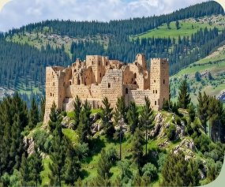
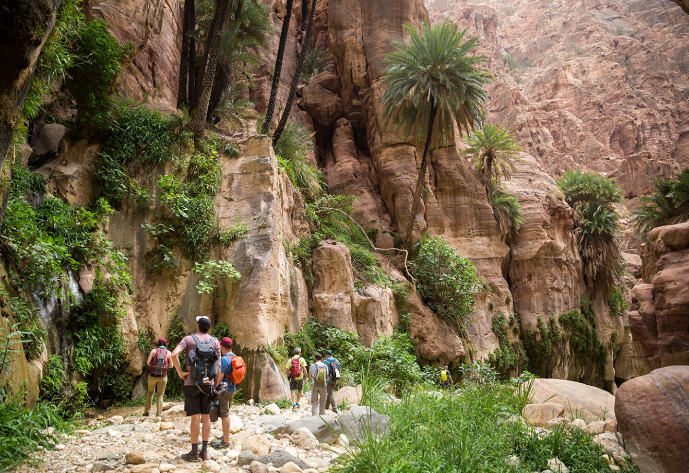

Forests & Nature
Jordan’s Hidden Places
Most Famous Spots

Ajloun Forest Reserve
Green hills and forests in the north, with the old Ajloun Castle on top of the mountain.
Forest Trails & Cable Car
Hike through the forest, take the cable car up to Ajloun Castle, and enjoy fresh air with views of green hills.
- Location: Ajloun, about 1.5 hours north of Amman.
- Price: Reserve entry about 3 JOD, cable car about 8 JOD.
- Activities: Hiking, cable car ride, and castle visit.
- Services: Cabins, RSCN lodge, and restaurant.

Dana Biosphere Reserve
Jordan's biggest nature reserve, with mountains, valleys, and a historic stone village.
Hiking & Eco-Lodge Stay
Walk from Dana village down to Feynan, see rare plants and birds, and sleep in a candle-lit eco-lodge.
- Location: Tafilah Governorate, south of Jordan.
- Price: Entry about 8 JOD per person.
- Activities: Hiking, birdwatching, and camping.
- Services: Dana guest house, campsite, and Feynan Ecolodge.